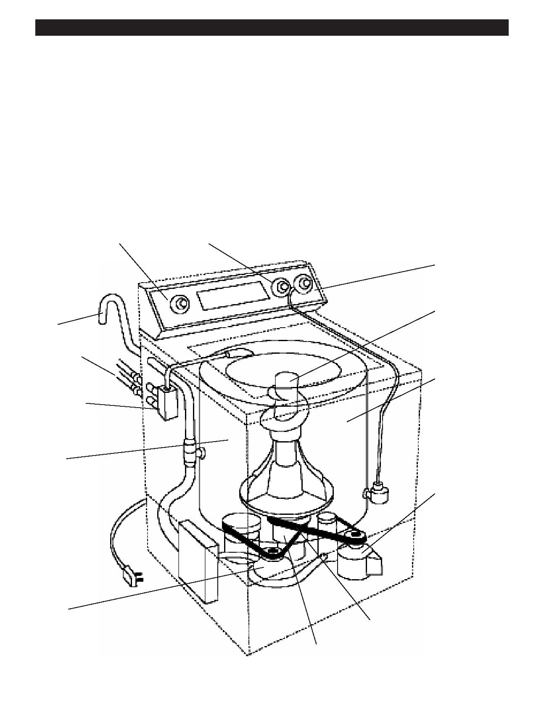

PA RT I C I PA N T R E S O U R C E G U I D E
Clothes Washer Maintenance and Repair
Next, we’re going to explore clothes washer repairs. Another level of difficulty is added
since the electrical and mechanical systems are joined by a plumbing system.
How a Clothes Washer Works
A washer uses water, detergent, and motion to clean laundry. It has four basic functions - fill, agitate, drain, and spin. At the
start of the wash cycle, the tub fills with hot, cold or warm water. In a top-loading washer, the agitator moves back and forth
or up and down. In the spin cycle, water is removed from the clothes and dirty water is drained.
In newer front-loading washers, the agitator is eliminated and the cylinder spins the laundry clean.
Anatomy of a Clothes Washer
Switches
Timer
Water level switch
Agitator
Drain hose
Inlet hose
Tub
Water inlet
valves
Wash
basket
Motor
Pump
Transmission belt
Transmission
26